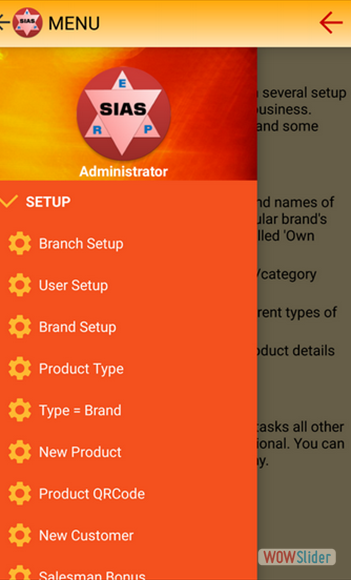
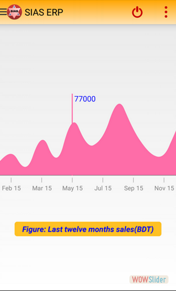

- 
- 
Product Description:
SIAS is an android based Enterprise Resource Planning (ERP) app. SIAS can be used to manage sales, inventory and accounts of a business. Your company/business has to be registered in SIAS and then multiple branches can be setup subsequently. You will be required license numbers to register your company/business and to setup any new branch. All kinds of transaction in SIAS have a company ID and a branch ID. It helps to generate both central and branch wise reports. Multiple users can use SIAS simultaneously. All kinds of administrative tasks are controlled by Administrator. Other types of users can perform sales, inventory and accounts related tasks. SIAS is an online system that means internet connection is always required to use SIAS. A user can access SIAS from any android device and from anywhere in the world using their credentials. All transactions are real time in SIAS, so business owner can get up-to-date information at any given time. SIAS is compatible with any android device with android OS version 3.0 or above. For better user experience a phone with 2 GB memory (RAM), 5inch+ screen size and high speed internet connection is required.
Key Features
1. All administrative tasks (product setup, user setup, product QR setup etc.) can be controlled by the Aministrator of each company
2. All master data (product list, account head etc.) can be setup by administrator. Multiple branches of a company can use these master data
3. Administrator can create any new users or disable existing users independetly
4. It takes only 10-15 seconds to enter a sales transaction
5. Both fixed-price and negotiable-price selling is supported by SIAS ERP
6. It is possible to print the receipt after each sales if user has a bluetooth POS printer
7. You can convert any reports to PDF format for printing purpose.
8. It is possible to create QR code for each product and use them during sales.
Technologies
The frontend, backend and database is completey designed and developed by me. I have used Android Studio, MySQL, SQLite, SOAP/REST web services, SVN and Tomcat Server to develop this app.
Click here to see it in the Play Store.